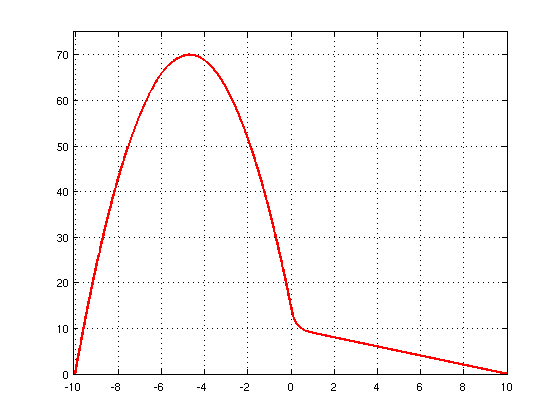
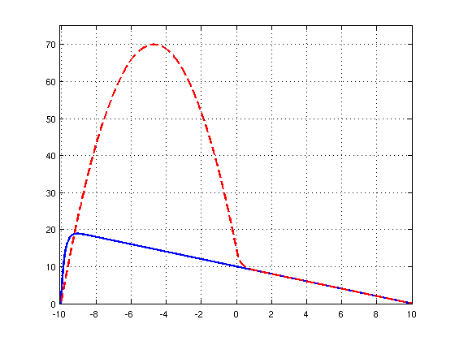

Advection-diffusion equation with a jump
Nick Trefethen, November 2010
(Chebfun example ode/AdvDiffJump.m)
The advection-diffusion equation
0.2u" + u' = -1, u(-10) = u(10) = 1
has a boundary layer at the left:
LW = 'linewidth'; lw = 2; FS = 'fontsize'; fs = 8; N = chebop(-10,10); N.op = @(u) 0.2*diff(u,2) + diff(u); N.bc = 'dirichlet'; u = N\-1; plot(u,LW,lw), grid on axis([-10.1 10 0 20])

Suppose the advection is only turned on on the right half of the domain?
figure N.op = @(x,u) 0.2*diff(u,2) + (x>=0).*diff(u); N.bc = 'dirichlet'; v = N\-1; plot(v,'r',LW,lw), grid on axis([-10.1 10 0 75])
For fun we can plot both solutions on the same axis.
plot(u,'b',v,'--r',LW,lw), grid on axis([-10.1 10 0 75])